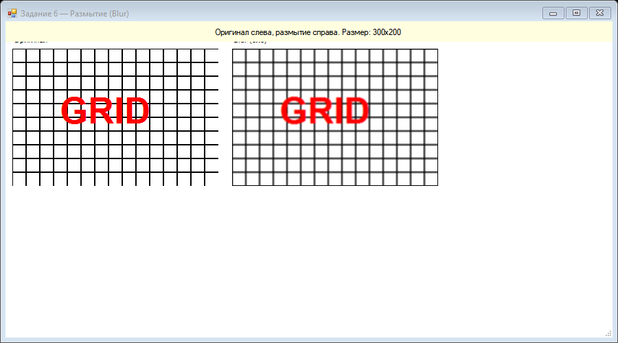
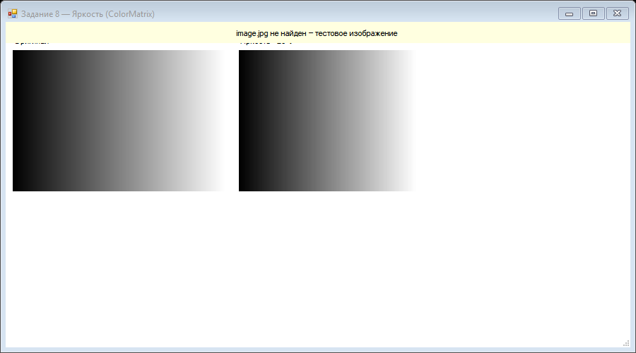
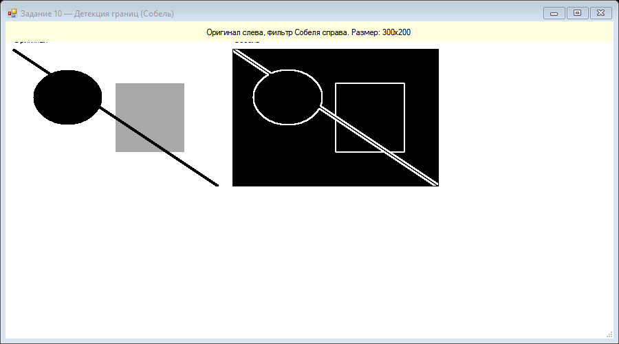

Урок 6.1: Обработка изображений
📌 Ключевые моменты этого урока:
- ColorMatrix позволяет менять цвета целому изображению за один раз
- Фильтры - это свёртка пикселей с матрицей ядра (каждый пиксель = взвешенная сумма соседей)
- Размытие (Box Blur) - каждый пиксель = среднее значение соседей в радиусе
- Контраст усиливает разницу между светлым и тёмным
- GetPixel/SetPixel медленны - используйте LockBits для больших изображений!
Фильтры (яркость, контраст)
private Bitmap AdjustBrightness(Bitmap image, float brightness)
{
Bitmap result = new Bitmap(image.Width, image.Height);
for (int y = 0; y < image.Height; y++)
{
for (int x = 0; x < image.Width; x++)
{
Color pixel = image.GetPixel(x, y);
int r = (int)(pixel.R * brightness);
int g = (int)(pixel.G * brightness);
int b = (int)(pixel.B * brightness);
result.SetPixel(x, y, Color.FromArgb(
Math.Min(255, r), Math.Min(255, g), Math.Min(255, b)));
}
}
return result;
}Размытие и резкость
// Простое размытие (Box blur)
private Bitmap Blur(Bitmap image, int radius)
{
Bitmap result = new Bitmap(image);
for (int y = radius; y < image.Height - radius; y++)
{
for (int x = radius; x < image.Width - radius; x++)
{
int r = 0, g = 0, b = 0, count = 0;
for (int dy = -radius; dy <= radius; dy++)
{
for (int dx = -radius; dx <= radius; dx++)
{
Color pixel = image.GetPixel(x + dx, y + dy);
r += pixel.R; g += pixel.G; b += pixel.B;
count++;
}
}
result.SetPixel(x, y, Color.FromArgb(
r / count, g / count, b / count));
}
}
return result;
}ColorMatrix
using System.Drawing.Imaging;
private Bitmap ApplyColorMatrix(Bitmap image, ColorMatrix matrix)
{
Bitmap result = new Bitmap(image.Width, image.Height);
using (Graphics g = Graphics.FromImage(result))
{
ImageAttributes attributes = new ImageAttributes();
attributes.SetColorMatrix(matrix);
g.DrawImage(image, new Rectangle(0, 0, image.Width, image.Height),
0, 0, image.Width, image.Height, GraphicsUnit.Pixel, attributes);
}
return result;
}
// Пример: сепия фильтр
ColorMatrix sepiaMatrix = new ColorMatrix(new float[][]
{
new float[] {0.393f, 0.349f, 0.272f, 0, 0},
new float[] {0.769f, 0.686f, 0.534f, 0, 0},
new float[] {0.189f, 0.168f, 0.131f, 0, 0},
new float[] {0, 0, 0, 1, 0},
new float[] {0, 0, 0, 0, 1}
});Практика: фоторедактор
Создайте простой фоторедактор с возможностями:
- Загрузка изображения
- Изменение яркости и контраста
- Применение фильтров (сепия, черно-белый)
- Сохранение результата
📝 Пример задания — размытие изображения
Загружает изображение (или генерирует тестовую сетку), применяет Box Blur через вспомогательный класс и отображает оригинал и размытый результат рядом:
using System;
using System.Drawing;
using System.Windows.Forms;
namespace CSharpGraphicsApp
{
public class Task06_Blur : Form
{
private Bitmap original;
private Bitmap blurred;
private readonly Label lblInfo;
public Task06_Blur()
{
Text = "Задание 6 — Размытие (Blur)";
Size = new Size(900, 500);
BackColor = Color.White;
DoubleBuffered = true;
Paint += Form1_Paint;
lblInfo = new Label
{
Dock = DockStyle.Top, Height = 30,
TextAlign = System.Drawing.ContentAlignment.MiddleCenter,
BackColor = Color.LightYellow
};
Controls.Add(lblInfo);
Load += (s, e) =>
{
try
{
using (var temp = Image.FromFile("image.jpg"))
original = new Bitmap(temp);
}
catch
{
original = GenerateTestImage(300, 200);
lblInfo.Text = "image.jpg не найден — тестовое изображение";
}
if (original != null)
{
blurred = Helpers.ImageFilters.ApplyBlur(original);
lblInfo.Text = "Оригинал слева, размытие справа. Размер: "
+ original.Width + "x" + original.Height;
}
};
}
private void Form1_Paint(object sender, PaintEventArgs e)
{
if (original == null || blurred == null) return;
Graphics g = e.Graphics;
g.DrawImage(original, 10, 40);
g.DrawString("Оригинал", SystemFonts.DefaultFont, Brushes.Black, 10, 20);
g.DrawImage(blurred, 330, 40);
g.DrawString("Blur (3x3)", SystemFonts.DefaultFont, Brushes.Black, 330, 20);
}
private static Bitmap GenerateTestImage(int w, int h)
{
Bitmap bmp = new Bitmap(w, h);
using (Graphics g = Graphics.FromImage(bmp))
{
g.Clear(Color.White);
using (Pen pen = new Pen(Color.Black, 2))
{
for (int i = 0; i < w; i += 20)
g.DrawLine(pen, i, 0, i, h);
for (int i = 0; i < h; i += 20)
g.DrawLine(pen, 0, i, w, i);
}
g.DrawString("GRID",
new Font("Arial", 40, FontStyle.Bold), Brushes.Red, 60, 60);
}
return bmp;
}
}
}📝 Пример задания — яркость через ColorMatrix
Применяет матрицу ColorMatrix с коэффициентом 1.2 ко всем RGB-каналам, не затрагивая альфа-канал:
using System;
using System.Drawing;
using System.Drawing.Imaging;
using System.Windows.Forms;
namespace CSharpGraphicsApp
{
public class Task08_Brightness : Form
{
private Image original;
public Task08_Brightness()
{
Text = "Задание 8 — Яркость (ColorMatrix)";
Size = new Size(900, 500);
BackColor = Color.White;
DoubleBuffered = true;
Paint += Form1_Paint;
var lblInfo = new Label
{
Dock = DockStyle.Top, Height = 30,
TextAlign = System.Drawing.ContentAlignment.MiddleCenter,
BackColor = Color.LightYellow
};
Controls.Add(lblInfo);
Load += (s, e) =>
{
try
{
original = Image.FromFile("image.jpg");
lblInfo.Text = "Оригинал слева, +20% яркость справа (через ColorMatrix)";
}
catch
{
original = GenerateTestImage(300, 200);
lblInfo.Text = "image.jpg не найден — тестовое изображение";
}
};
}
private void Form1_Paint(object sender, PaintEventArgs e)
{
if (original == null) return;
Graphics g = e.Graphics;
g.DrawImage(original, 10, 40);
g.DrawString("Оригинал", SystemFonts.DefaultFont, Brushes.Black, 10, 20);
float v = 1.2f;
ColorMatrix cm = new ColorMatrix(new float[][]
{
new float[] {v, 0, 0, 0, 0},
new float[] {0, v, 0, 0, 0},
new float[] {0, 0, v, 0, 0},
new float[] {0, 0, 0, 1, 0},
new float[] {0, 0, 0, 0, 1}
});
using (ImageAttributes ia = new ImageAttributes())
{
ia.SetColorMatrix(cm);
Rectangle dest = new Rectangle(330, 40,
original.Width, original.Height);
g.DrawImage(original, dest,
0, 0, original.Width, original.Height,
GraphicsUnit.Pixel, ia);
}
g.DrawString("Яркость +20%",
SystemFonts.DefaultFont, Brushes.Black, 330, 20);
}
private static Bitmap GenerateTestImage(int w, int h)
{
Bitmap bmp = new Bitmap(w, h);
using (Graphics g = Graphics.FromImage(bmp))
using (var lgb = new System.Drawing.Drawing2D.LinearGradientBrush(
new Rectangle(0, 0, w, h), Color.Black, Color.White, 0f))
{
g.FillRectangle(lgb, 0, 0, w, h);
}
return bmp;
}
}
}📝 Пример задания — детекция границ Собелем
Применяет оператор Собеля через вспомогательный метод ImageFilters.ApplySobel. При отсутствии файла генерирует тестовое изображение с геометрическими фигурами:
using System;
using System.Drawing;
using System.Windows.Forms;
namespace CSharpGraphicsApp
{
public class Task10_EdgeDetection : Form
{
private Bitmap original;
private Bitmap edges;
private readonly Label lblInfo;
public Task10_EdgeDetection()
{
Text = "Задание 10 — Детекция границ (Собель)";
Size = new Size(900, 500);
BackColor = Color.White;
DoubleBuffered = true;
Paint += Form1_Paint;
lblInfo = new Label
{
Dock = DockStyle.Top, Height = 30,
TextAlign = System.Drawing.ContentAlignment.MiddleCenter,
BackColor = Color.LightYellow
};
Controls.Add(lblInfo);
Load += (s, e) =>
{
try
{
using (var tmp = Image.FromFile("image.jpg"))
original = new Bitmap(tmp);
}
catch
{
original = GenerateTestImage(300, 200);
lblInfo.Text = "image.jpg не найден — тестовое изображение";
}
if (original != null)
{
edges = Helpers.ImageFilters.ApplySobel(original);
lblInfo.Text = "Оригинал слева, фильтр Собеля справа. Размер: "
+ original.Width + "x" + original.Height;
}
};
}
private void Form1_Paint(object sender, PaintEventArgs e)
{
if (original == null || edges == null) return;
Graphics g = e.Graphics;
g.DrawImage(original, 10, 40);
g.DrawString("Оригинал", SystemFonts.DefaultFont, Brushes.Black, 10, 20);
g.DrawImage(edges, 330, 40);
g.DrawString("Собель", SystemFonts.DefaultFont, Brushes.Black, 330, 20);
}
private static Bitmap GenerateTestImage(int w, int h)
{
Bitmap bmp = new Bitmap(w, h);
using (Graphics g = Graphics.FromImage(bmp))
{
g.Clear(Color.White);
g.FillEllipse(Brushes.Black, 30, 30, 100, 80);
g.FillRectangle(Brushes.DarkGray, 150, 50, 100, 100);
g.DrawLine(new Pen(Color.Black, 4), 0, 0, w, h);
}
return bmp;
}
}
}Практическое задание
Задание: Обработка изображений
- Создайте фоторедактор с ползунками для яркости, контраста
- Используйте ColorMatrix для применения изменений
- Реализуйте фильтры (сепия, черно-белый)
Задание по аналогии: Размытие изображения
По аналогии с Task06_Blur реализуйте Box Blur — алгоритм усреднения соседних пикселей.
- Создайте форму с
Labelвверху (Dock = Top) и полямиBitmap original,Bitmap blurred. - В обработчике
Loadзагрузите изображение из файла или сгенерируйте тестовое (сетку из линий черезDrawLine). - Реализуйте метод Box Blur: для каждого пикселя (x, y) вычислите среднее значение R, G, B соседей в квадрате ±radius.
- Запишите результат в новый
Bitmap blurredчерезSetPixelи вызовитеInvalidate(). - В
Form1_Paintнарисуйте оба изображения рядом черезDrawImageс подписями "Оригинал" и "Blur".
Пример результата выполнения задания:

Скриншот программы (Task06)
radius до Width - radius - 1, иначе выйдете за границы массива. Для больших изображений замените GetPixel/SetPixel на LockBits.
Задание по аналогии: Яркость через ColorMatrix
По аналогии с Task08_Brightness создайте форму с регулировкой яркости через ColorMatrix.
- Загрузите изображение в поле
Image originalили создайте тестовое с помощьюLinearGradientBrush. - Создайте
ColorMatrixразмером 5×5, где диагональные элементы [0,0], [1,1], [2,2] равны коэффициенту яркостиv(например, 1.2 для +20%). - Оберните матрицу в
ImageAttributesчерезia.SetColorMatrix(cm). - В
Form1_Paintнарисуйте оригинал слева и яркий вариант справа через перегрузкуDrawImage(image, destRect, 0, 0, w, h, GraphicsUnit.Pixel, ia). - Дополнительно: добавьте
TrackBarдля изменения коэффициента яркости в диапазоне 0.5–2.0.
Пример результата выполнения задания:

Скриншот программы (Task08)
Задание по аналогии: Детекция границ оператором Собеля
По аналогии с Task10_EdgeDetection реализуйте оператор Собеля вручную без вспомогательного класса.
- Создайте тестовое изображение с несколькими геометрическими фигурами (эллипс, прямоугольник, диагональная линия).
- Для каждого пикселя (x, y) — кроме граничных — вычислите
Gxс ядром [[-1,0,1],[-2,0,2],[-1,0,1]] иGyс ядром [[-1,-2,-1],[0,0,0],[1,2,1]]. - Рассчитайте магнитуду:
int mag = Math.Min(255, (int)Math.Sqrt(Gx * Gx + Gy * Gy)); - Запишите результат в новый Bitmap:
Color.FromArgb(mag, mag, mag). - Отобразите оригинал и результат рядом с подписями.
Пример результата выполнения задания:

Скриншот программы (Task10)
int gray = (int)(0.299*R + 0.587*G + 0.114*B). Это упрощает вычисление градиентов.
Проверка знаний
Ответьте на вопросы, чтобы проверить, насколько хорошо вы усвоили материал: